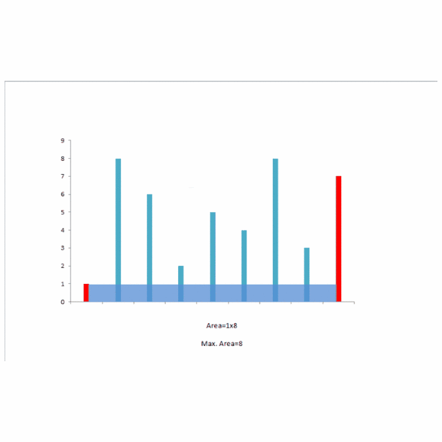

LeetCode 刷题笔记——day 8
LeetCode 刷题笔记——day 8
11. 盛最多水的容器
难度：中等
给你 n 个非负整数 a1，a2，...，a``n，每个数代表坐标中的一个点 (i, ai) 。在坐标内画 n 条垂直线，垂直线 i 的两个端点分别为 (i, ai) 和 (i, 0) 。找出其中的两条线，使得它们与 x 轴共同构成的容器可以容纳最多的水。
**说明：**你不能倾斜容器。
示例 1：

1 | 输入：[1,8,6,2,5,4,8,3,7] |
示例 2：
1 | 输入：height = [1,1] |
示例 3：
1 | 输入：height = [4,3,2,1,4] |
示例 4：
1 | 输入：height = [1,2,1] |
提示：
n == height.length2 <= n <= 1050 <= height[i] <= 104
我的答案
思路
移动左边的索引，同时从大到小遍历右边的索引，若当前右索引对应高度小于上一个，则面积肯定更小，因此可以跳过，遍历的同时保存最大面积，最后输出即可。
然而，这里依然是非常粗暴的解题，因此效率还是非常慢，即使我已经自信满满地增加了排除语句。在测试失败之后我才意识到，原来测试数据能离谱到这种地步，五万字数的数组，实在让我一时不知改如何升级代码了，因此这里直接贴出我的失败代码。
1 | class Solution { |
- 超时了！
- 超时了！
思考挺长时间了，尝试了一下双指针法，总感觉怪怪的，没写下去，参考学习一下官方的题解吧（正好，官方提供的也是双指针法）：
官方答案
双指针
说明
本题是一道经典的面试题，最优的做法是使用「双指针」。如果读者第一次看到这题，不一定能想出双指针的做法。
分析
我们先从题目中的示例开始，一步一步地解释双指针算法的过程。稍后再给出算法正确性的证明。
题目中的示例为：
2
^ ^在初始时，左右指针分别指向数组的左右两端，它们可以容纳的水量为。
此时我们需要移动一个指针。移动哪一个呢？直觉告诉我们，应该移动对应数字较小的那个指针（即此时的左指针）。这是因为，由于容纳的水量是由
两个指针指向的数字中较小值 * 指针之间的距离 决定的。如果我们移动数字较大的那个指针，那么前者「两个指针指向的数字中较小值」不会增加，后者「指针之间的距离」会减小，那么这个乘积会减小。因此，我们移动数字较大的那个指针是不合理的。因此，我们移动 数字较小的那个指针。
有读者可能会产生疑问：我们可不可以同时移动两个指针？ 先别急，我们先假设 总是移动数字较小的那个指针 的思路是正确的，在走完流程之后，我们再去进行证明。
所以，我们将左指针向右移动：
2
^ ^此时可以容纳的水量为。由于右指针对应的数字较小，我们移动右指针：
2
^ ^此时可以容纳的水量为。由于右指针对应的数字较小，我们移动右指针：
2
^ ^此时可以容纳的水量为。两指针对应的数字相同，我们可以任意移动一个，例如左指针：
2
^ ^此时可以容纳的水量为。由于左指针对应的数字较小，我们移动左指针，并且可以发现，在这之后左指针对应的数字总是较小，因此我们会一直移动左指针，直到两个指针重合。在这期间，对应的可以容纳的水量为：，，。
在我们移动指针的过程中，计算到的最多可以容纳的数量为 4949，即为最终的答案。
下面的动画也给出了这个示例的过程：

证明
为什么双指针的做法是正确的？
双指针代表了什么？
双指针代表的是 可以作为容器边界的所有位置的范围。在一开始，双指针指向数组的左右边界，表示 数组中所有的位置都可以作为容器的边界，因为我们还没有进行过任何尝试。在这之后，我们每次将 对应的数字较小的那个指针 往 另一个指针 的方向移动一个位置，就表示我们认为 这个指针不可能再作为容器的边界了。
为什么对应的数字较小的那个指针不可能再作为容器的边界了？
在上面的分析部分，我们对这个问题有了一点初步的想法。这里我们定量地进行证明。
考虑第一步，假设当前左指针和右指针指向的数分别为 和，不失一般性，我们假设。同时，两个指针之间的距离为。那么，它们组成的容器的容量为：
我们可以断定，如果我们保持左指针的位置不变，那么无论右指针在哪里，这个容器的容量都不会超过 了。注意这里右指针只能向左移动，因为 我们考虑的是第一步，也就是 指针还指向数组的左右边界的时候。
我们任意向左移动右指针，指向的数为 ，两个指针之间的距离为 ，那么显然有 ，并且 :
如果 ，那么 ;
如果 ，那么 。
因此有：
即无论我们怎么移动右指针，得到的容器的容量都小于移动前容器的容量。也就是说，这个左指针对应的数不会作为容器的边界了 ，那么我们就可以丢弃这个位置，将左指针向右移动一个位置 ，此时新的左指针于原先的右指针之间的左右位置，才可能会作为容器的边界。
这样以来，我们将问题的规模减小了，被我们丢弃的那个位置就相当于消失了。此时的左右指针，就指向了一个新的、规模减少了的问题的数组的左右边界 ，因此，我们可以继续像之前 考虑第一步 那样考虑这个问题：
求出当前双指针对应的容器的容量；
对应数字较小的那个指针以后不可能作为容器的边界了，将其丢弃，并移动对应的指针。
最后的答案是什么？
答案就是我们每次以双指针为左右边界（也就是「数组」的左右边界）计算出的容量中的最大值。
作者：LeetCode-Solution
看懂了理论之后，突然清晰了很多，把之前的代码补充完便成功了：
1 | class Solution { |
执行用时: 76 ms
内存消耗: 57.6 MB
这里继续联系联系 Java 实现：
1 | class Solution { |
执行用时: 4 ms
内存消耗: 51.6 MB
总结
其实这道题确实很简单，但是目前来说，思维还是被暴力求解法给困住了，还是得多刷刷多学学。